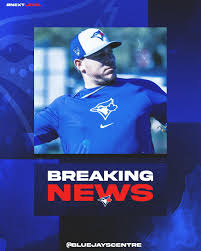

Rodriguez debuts as jays look to bounce back
Offseason signing yariel Rodriguez makes his MLB Debut Today against the rockies in game two of this three game series.
Offseason signing yariel Rodriguez makes his MLB Debut Today against the rockies in game two of this three game series.
Blue Jays fans are hopeful for the quick return of closer Jordan Romano.
The jays face Kris Bryant and the Rockies at home in this years first interleague matchup.